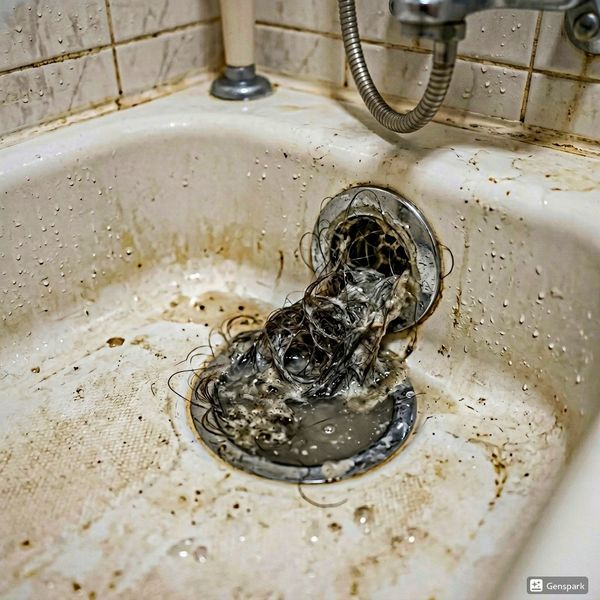
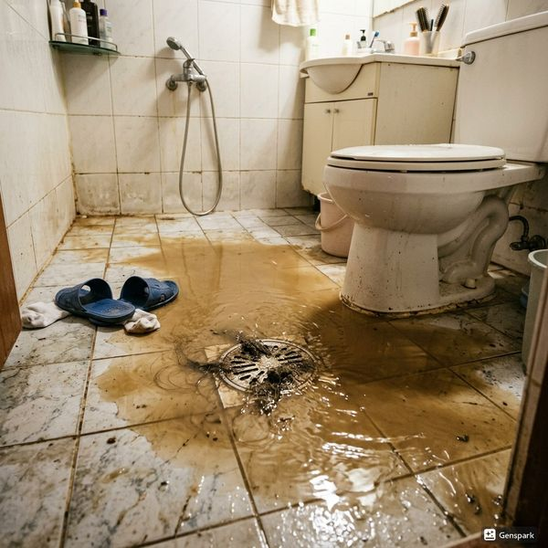

옥상 방수와 배관의 밀접한 관계
빌라 옥상은 빗물 배수관, 우수관, 통기관 등 여러 배관이 지나가는 곳입니다. 옥상 방수층이 노후되면 빗물이 배관 관통부를 통해 실내로 침투하여 최상층 세대에 누수를 일으킵니다. 특히 배관이 옥상 바닥을 관통하는 부분은 방수 취약점으로, 배관 주변 실링이 경화되거나 갈라지면 그 틈으로 물이 스며듭니다. 제우스시설관리에서 점검하는 빌라 누수 사례의 약 40%가 옥상 배관 관통부 방수 불량이 원인입니다. 방수층은 5~10년마다 재시공이 필요하며, 배관 관통부는 연 1회 이상 점검해야 합니다.
옥상 배관 점검 체크리스트
옥상 배관 점검 시 확인해야 할 항목은 다음과 같습니다. 우수 배수구의 낙엽과 이물질 청소 상태, 배관 관통부 주변 방수 실링의 균열 여부, 우수관 연결부의 느슨함이나 이탈 여부, 통기관 상단 캡의 파손 여부, 옥상 바닥 방수층의 균열과 들뜸 여부를 살펴봅니다. 이상이 발견되면 즉시 전문가 점검을 받아야 합니다. 제우스시설관리는 누수탐지 장비와 관로탐지기를 활용하여 눈에 보이지 않는 내부 누수까지 정확하게 찾아냅니다. 사전 점검으로 대규모 누수 피해를 예방하세요.

자주 묻는 질문
Q. 옥상 방수 재시공 비용은 얼마인가요?
A. 빌라 옥상 면적에 따라 다르지만 평당 5~10만원(우레탄 방수 기준)이며, 배관 관통부 보수는 별도로 20~50만원 정도입니다.
Q. 빌라 옥상 점검은 얼마나 자주 해야 하나요?
A. 최소 연 2회(장마 전, 동절기 전) 점검을 권장하며, 10년 이상 된 빌라는 분기별 점검이 안전합니다.